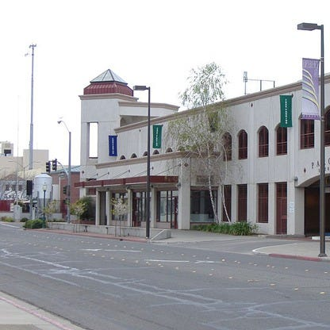
Karen Bohrer, my grandma, is 70 years old and grew up in Merced, California. She was a single day away from her eleventh birthday when the event occured.
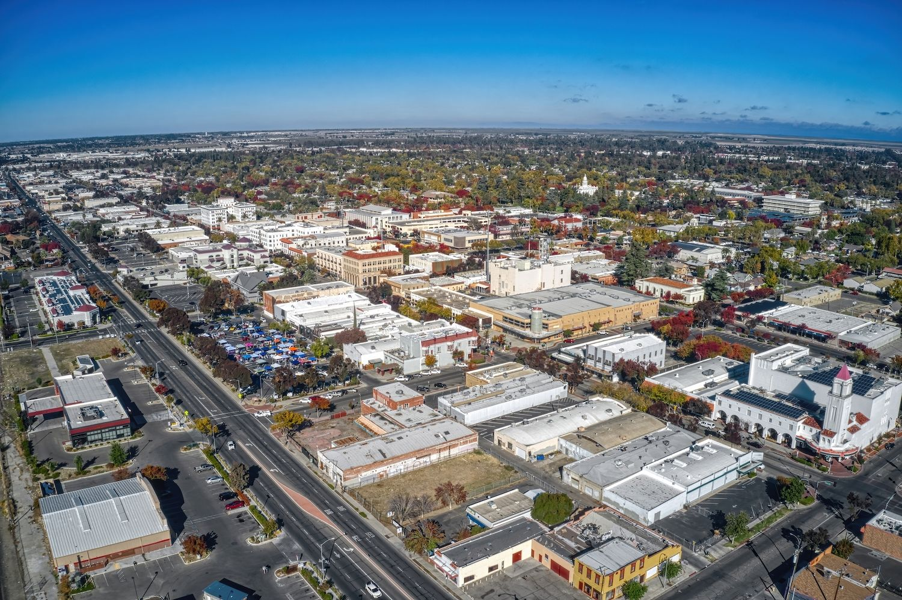
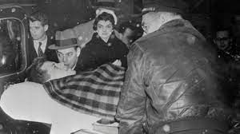
On November 21, 1963, President John F. Kennedy was visiting Dallas, Texas, when he was shot in the neck and head. He died half an hour later in a hospital.
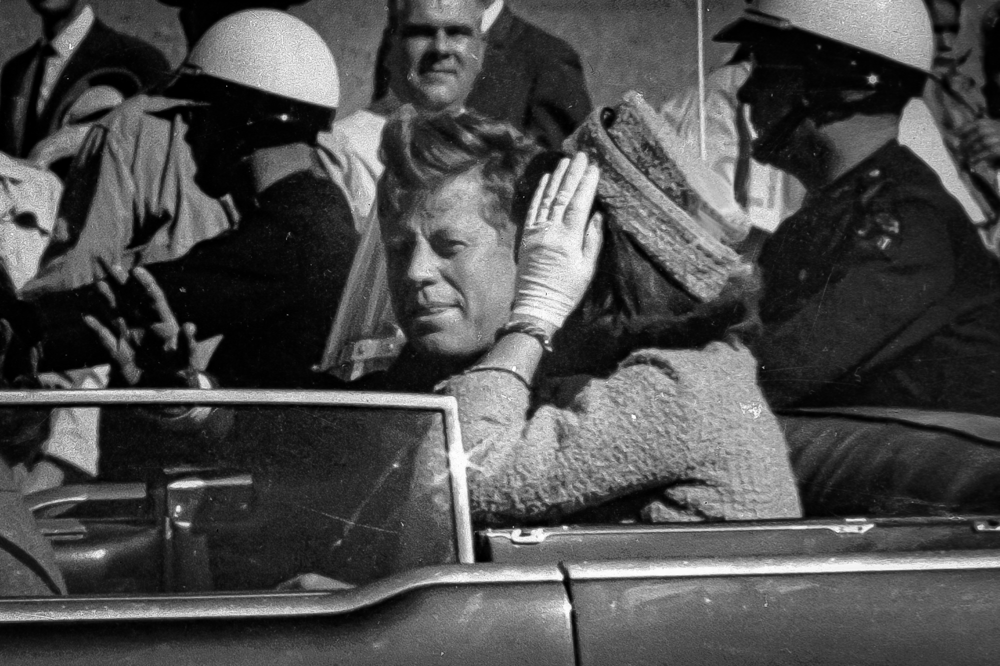
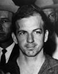
The assassin, Lee Harvey Oswald, was arrested for the murder but was shot and killed by a local nightclub owner. In 1979, a committee on the event decided that Kennedy was most likely assassinated because of a conspiracy.
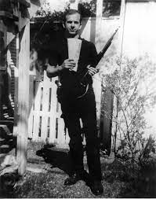
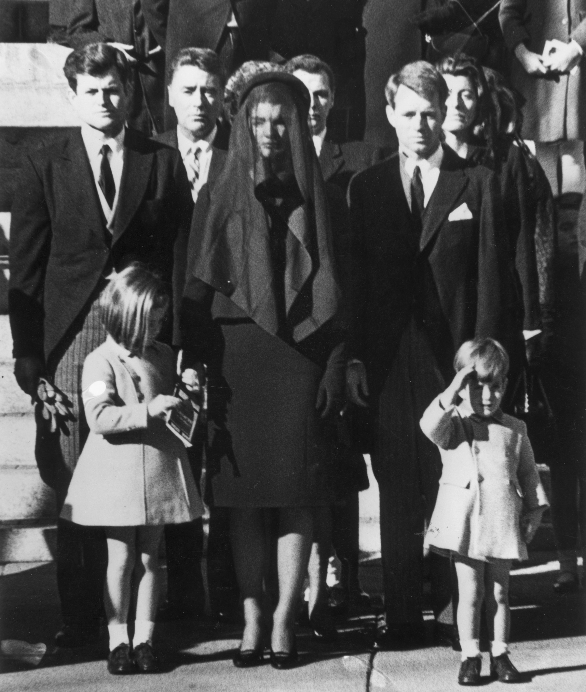
This had a significant impact on America’s people and politics. Citizens nationwide mourned his death, as his memorial was broadcasted on television. The vice president, Lyndon B. Johnson, was very quickly put in office.
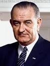
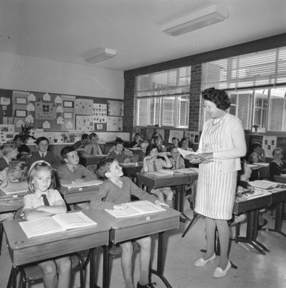
That morning, my grandma was studying in class when her principal burst into the room to tell the class about the shooting. It was a traumatic time for her that she will remember forever.
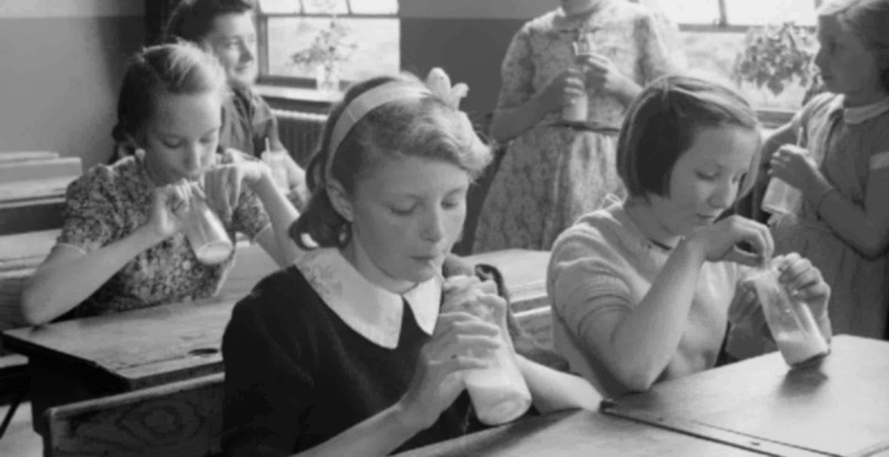
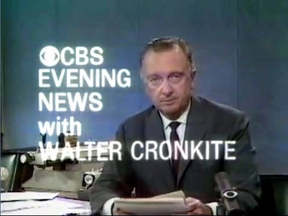
She spent a lot of time watching the news, the funeral, and anything else talking about the assassination on television. Her father would keep repeating, “This is history in the making."
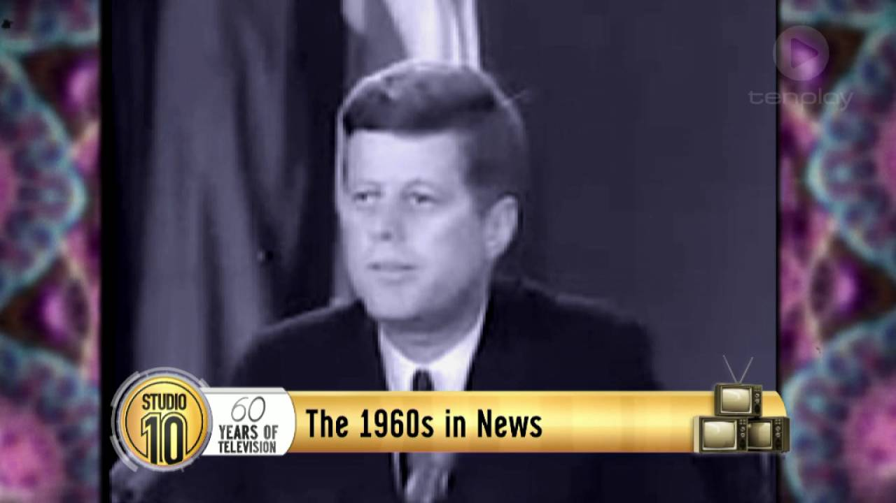